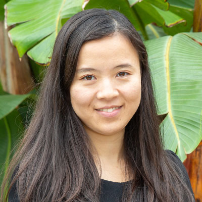
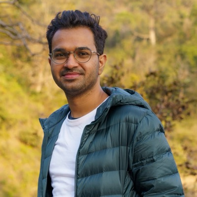
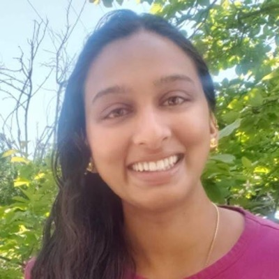
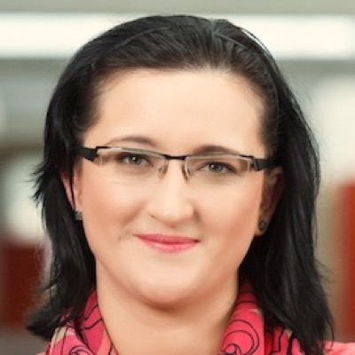
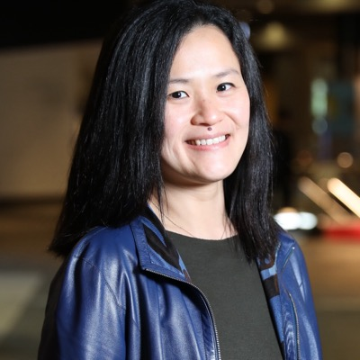

Forecasting and simulation tasks
Long-horizon and multi-resolution prediction, multimodal contextual forecasting, calibrated probabilistic forecasts, trajectory simulation, and adaptive or agentic forecasting systems.
NeurIPS 2026 Workshop · Sydney
Bringing forecasting, simulation, multimodal temporal data, and reliability into one research agenda for models of evolving real-world systems.
Why this workshop
Temporal machine learning is moving beyond task-specific prediction. The next challenge is to build foundation models that can forecast, simulate, adapt, and support decisions in systems that evolve across time, modalities, and scales.
Real systems are multimodal, asynchronous, event-driven, multi-scale, and subject to distribution shift. Treating a model as more than a forecaster changes what matters: calibrated uncertainty, long-horizon consistency, simulation fidelity, causal structure, and reliable operation with retrieval, tools, and external context.
Workshop framing
The workshop connects multimodal histories and interventions to models that maintain temporal state, imagine alternative futures, and remain trustworthy as conditions change.
Research agenda
The workshop connects task design, data and environments, model architecture, and evaluation. Datasets, simulators, and temporal environments are treated as primary research artifacts, not supporting material.
Long-horizon and multi-resolution prediction, multimodal contextual forecasting, calibrated probabilistic forecasts, trajectory simulation, and adaptive or agentic forecasting systems.
Rich environments combining time series with text, video, graphs, sensors, trajectories, actions, and events, alongside realistic benchmarks and scalable simulation suites.
Irregular and event-based models, hierarchical multi-timescale systems, state-space architectures, generative temporal models, and time-series foundation models.
Leakage-aware evaluation, robustness under shift, calibration, long-horizon and simulation consistency, neural scaling laws, contamination audits, and reproducibility.
Timeline
All submission deadlines are at 11:59 pm AoE. The notification date is set by the NeurIPS workshop chairs and cannot be extended.
Confirmed guests
Eight researchers spanning time-series machine learning, foundation models, scientific ML, generative temporal modeling, and world models across academia and industry.





Who is behind this
Eight organizers spanning large-scale forecasting, temporal representation learning, scientific machine learning, generative modeling, and deployed AI systems.
One-day program
A deliberately mixed program for technical depth and sustained exchange. Timing remains tentative until NeurIPS assigns the workshop day and room.
| Time | Session |
|---|---|
| 09:00–09:10 | Opening remarks |
| 09:10–10:10 | Invited talks I–III |
| 10:10–10:55 | Coffee break and Posters I |
| 10:55–11:35 | Invited talks IV–V |
| 11:35–12:20 | Spotlights I 5 talks + Q&A |
| 12:20–13:30 | Lunch |
| 13:30–14:10 | Invited talks VI–VII |
| 14:10–14:55 | Coffee break and Posters II |
| 14:55–15:15 | Invited talk VIII |
| 15:15–16:00 | Spotlights II 5 talks + Q&A |
| 16:00–17:00 | Moderated panel |
| 17:00–17:25 | Open community discussion |
| 17:25–17:30 | Closing remarks |
Invited talks are 20 minutes each; spotlight talks are 7 minutes plus Q&A. The schedule will be adjusted to final NeurIPS 2026 logistics.
Community
Researchers and practitioners in time-series ML, multimodal and generative temporal modeling, foundation models, scientific ML, and world models, alongside teams building production systems for healthcare, climate, and operations. We anticipate 200–300 in-person attendees.
This new workshop complements TSALM, BERT2S, MiLeTS, and AI4TS while centering what temporal world modeling adds beyond forecasting.
Women make up 4 of the 8 invited speakers. The team spans institutions across Asia, the Middle East, Australia, Europe, and North America, bridges academia and industry, and includes researchers across career stages.
Spotlight selection will prioritise junior and early-career contributions, and the workshop will follow NeurIPS accessibility and inclusion guidance.
Get in touch
For submission or program questions, email fmts-neurips2026@googlegroups.com. You can also review the organizing team.